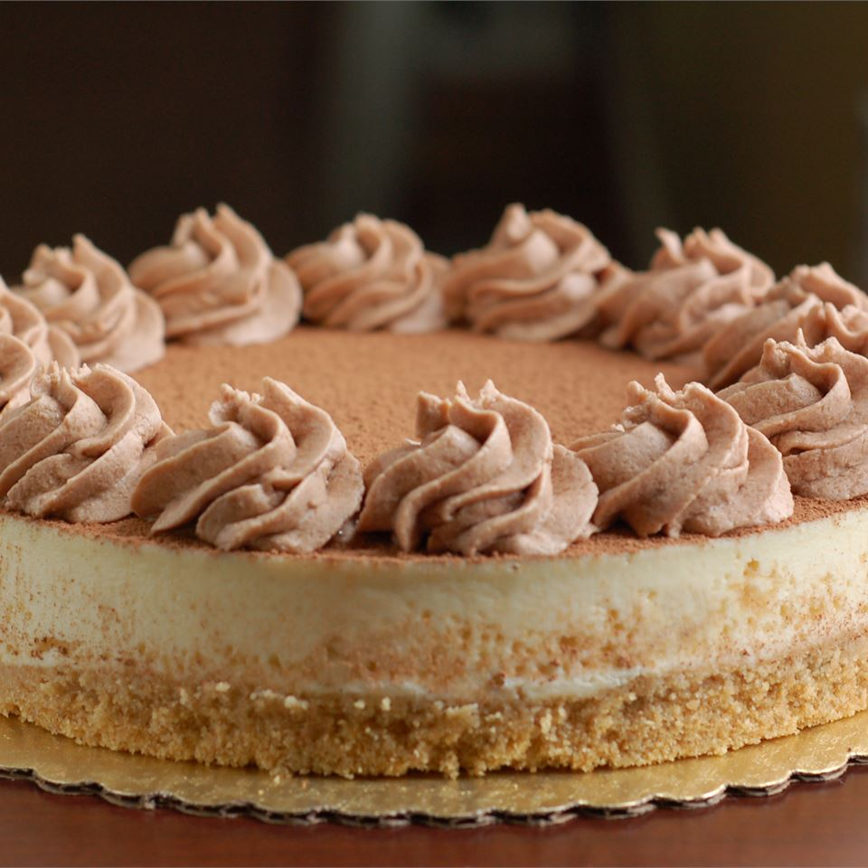

Tiramisu' Cheesecake

Description
Tiramisu-flavored cheesecake combines the flavors and richness of tiramisu and NY Cheesecake. Just before serving, grate some semisweet chocolate on the top.
Ingredients
- 1 package of ladyfingers
- 1/4 cup of butter, melted
- 1.4 cup of coffee-falored liqueur, divided
- 3 packages of cream cheese
- 1 container of mascarpone cheese
- 1 cup of white sugar
- 2 eggs
- 1/4 cup of all-purpose flour
- 1 square of semisweet chocolate
Steps
- Preheat oven to 350 degrees F (175 degrees C). Place a pan of water on the bottom of the oven.
- Crush the package of ladyfingers to fine crumbs. Mix the melted butter into the crumbs. Moisten with 2 tablespoons of the coffee liqueur. Press into an 8-inch springform pan.
- In a large bowl, mix cream cheese, mascarpone, and sugar until very smooth. Add 2 tablespoons coffee liqueur, and mix. Add the eggs and the flour; mix slowly just until smooth. Pour batter over crust in the springform pan.
- Place pan on middle rack of oven. Bake until just set, 40 to 45 minutes. Open oven door, and turn off the heat. Leave cake to cool in oven for 20 minutes. Remove from oven, and let it finish cooling, about 30 minutes. Refrigerate for at least 3 hours, or overnight.
- Grate semisweet chocolate over the top right before serving.